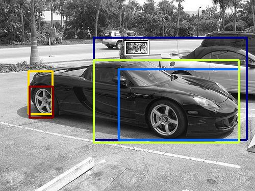
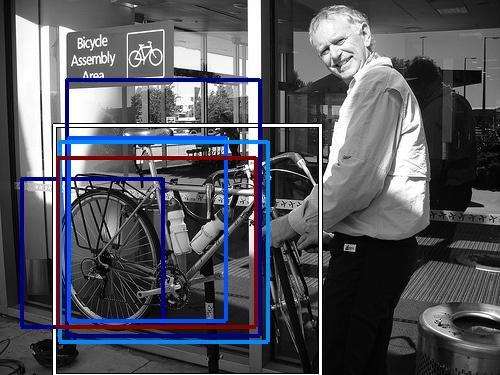
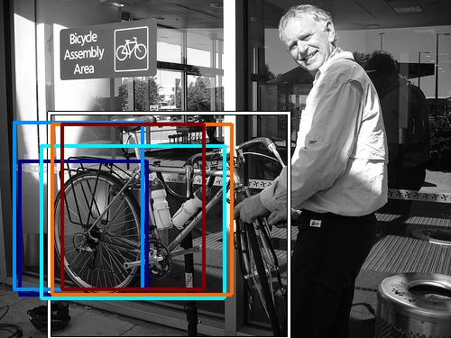

0.486900

0.598094

0.600561

0.603850

0.608073

0.612227

0.630670

0.635893

0.641726

0.666072
| Target image | 0.486900 | 0.598094 | 0.600561 | 0.603850 | 0.608073 | 0.612227 | 0.630670 | 0.635893 | 0.641726 | 0.666072 |
Target image |  14897.542969 |  13457.423828 |  12362.716797 |  11256.833984 |  10760.191406 |  9524.500000 |  9254.815430 |  8514.932617 |  8485.909180 |  7698.506836 |
Target image |  11880.069336 |  6878.575195 |  6801.171875 |  6586.948730 |  6531.975098 |  5423.271973 |  5337.919922 |  4907.337402 |  4410.043945 |  4117.818359 |
Target image |  55102.945312 |  43245.082031 |  36471.015625 |  34385.070312 |  27517.761719 |  24737.888672 |  23430.320312 |  20613.851562 |  20337.968750 |  18592.611328 |
Target image |  32479.847656 |  27112.314453 |  26147.644531 |  24777.507812 |  21452.171875 |  20654.960938 |  20329.345703 |  19333.390625 |  18802.474609 |  17969.300781 |